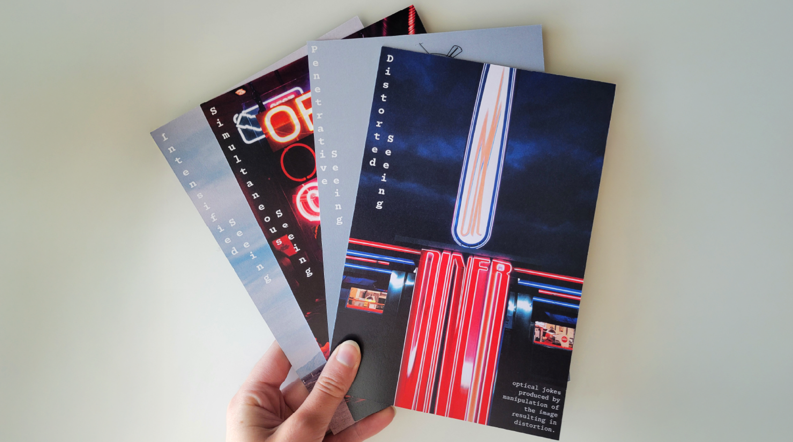
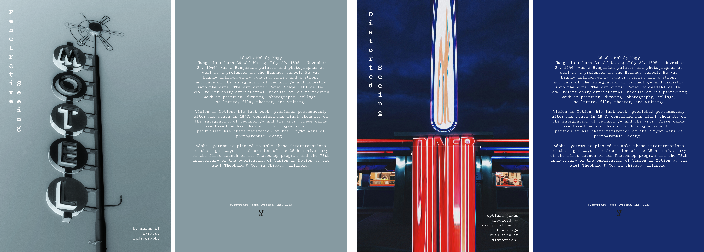
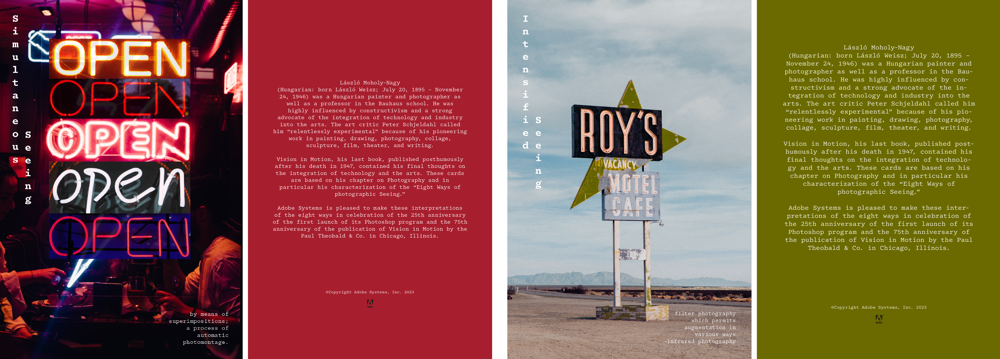

A set of four collector cards created for a hypothetical Adobe campaign celebrating László Moholy-Nagy's eight principles of photographic seeing. Each card reinterprets one aspectof Moholy-Nagy's experimental vision through digital collage and image manipulation. The series functions as both homage and reinterpretation by translating his foundational approaches into graphics that honor his legacy of innovation.



Website Hand Coded by Leah Mozeleski
Best Viewed on Desktop